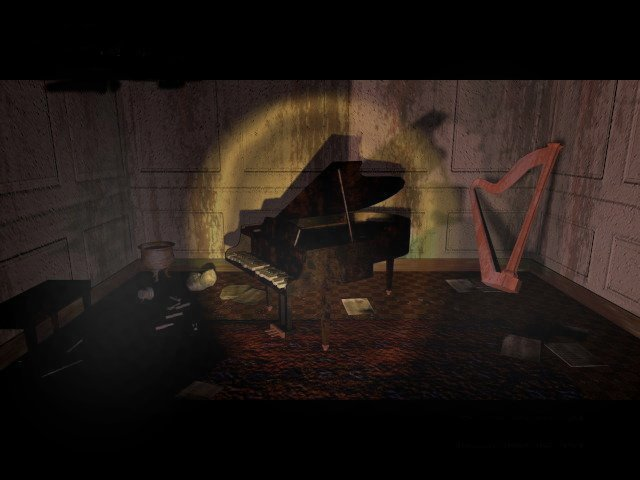

Wanted to know about the lyrics of the music of the 11th hour? Well,
here it is. All these songs can be found on the making of the 11th hour.
Except Skeletons in my closet and The Game, those are on the audio part of the seventh guest.
I also have a couple of midi's for your hearing pleasure.
Choir Pain
Mystere, fara, Astaroth!
Manitas, morto-ra
Hala, hala, Astaroth!
Hass! Hass!
Written
and produced by George Sanger
Vocals by Robert Harrison
The Game
Let's take the time,
To find out what's inside
Away from all this wind and rain
The six arrive, the fire lights
their eyes; Invited here to learn
to play - the game
We travel blind, and feel
along the walls
And barely know from where we came,
The paths divide the players from the rules,
but we're the ones who chose to play - the game.Let's take the time to
find ourselves again,
Away from daily stress and pain.
Though we may find, we'll not come back the same,
that happens sometimes when we play - the game
Mr Death
I can't take a breath
without seeing Mr Death.
Well, I can't take a step, I can't make a move,
I can't think a thought, I can't sing a song,
with a minimal groove.
I can't get away from the singular fact.
I can't take a breath without seeing Mr Death.
I can't do the disco; Mr Death will step on my foot.
I can't sing the rest; Well, I can't take a breath;
without seeing Mr Death.
But I can't see Mr Death if I don't take that breath.(A one and a two and a three) I can't find my car keys;
Better ask Mr Death. And I get so lonely;
We have a game of chess. I can't take a breath without seeing Mr Death.
Skeletons
in my Closet
Written
by David Sanger
Produced by The Fat Man
Forty-eight years of
livin',
an angel in disguise.
Forty-eight years of lovin',
smiling with my eyes.
Forty-eight years of memories,
neatly tucked away.
When daylight dies I hear them rise,
and dance upon their graves.
What's that sound comin' from the
dresser on a night as black as pitch?
What's that sound comin' from the
bureau do I dare turn on the switch?
Bones them bones, them dry bones all
bleached and deathly white.
I've got skeletons in my closet
and they're rattling tonight.
Are thereby connected to lies:
'I-love-you's said indescriminately
Make the sockets for the eyes.
The love bones knock against the hate bones,
And the fingers click in time.
Their won't be sleep for the weary tonight,
'Cos all those bones are mine. (hup hup, they're in my closet now
hup hup hup, I wouldn't wanna wake 'em
hup hup, they're in my dresser drawer
hup hup hup, I'm trying to forsake 'em)
The Joker (commonly known as
'The Final Hour')Written
and Produced by The Fat Man
Welcome to my, house.
Say what you want! Say it! Come (come) play the shell
game with the madman,
(Mystere, fara, Astaroth!)
And maybe you can win his bride,
(Manitas, morto-ra)
Or you can try for something better.
You decide.
<(let's take)
Why don't you bet it all on seven?
(the time)
Your guess could be as good as mine.
(to find out what's inside)
Just roll the bones: you could get lucky.
(away from all this wind and rain)
For a time....
Until the final hour.
(answering machine
message)
"Hello you've reached the madman and me.
There's no one in the house right now,
But you know what to do....don't you?
Everybody walks away a winner.
Don't ask how.
Now that your luck has
gotten colder,
Perhaps you'll tell me how it feels
to be the one who plays the joker;
...making deals!
I should be doing stuff,
but I'd rather put it off;
Until the final hour.(repeat and fade)
I also have a midi archive.